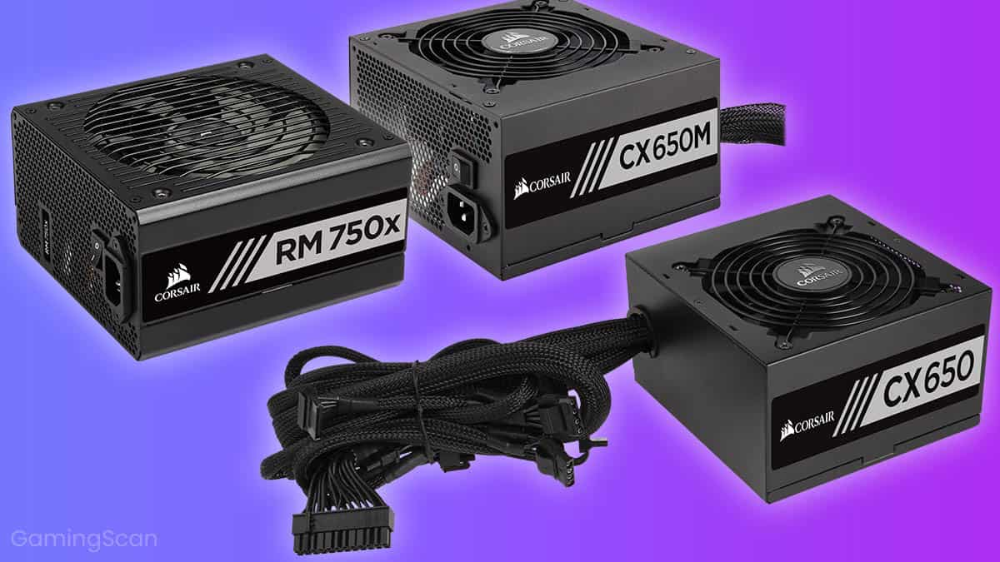

Power Supply Unit - This splits the incoming power into different cables, and they come in many different wattages like 650w or 1000w.
They come in different types of cables.
Modular ones have separate cables you can plug in and take out, Semi-Modular have some detachable cables that you may not need but the main ones are still unpluggable and non-modular have every cable attached in to the unit.
Modular are the most expensive but waste the least amount of electricity and means you can have good cable management and non-modular are the cheapest but waste the most and you often have a bundle of cables you don’t use or need so it's quite hard to see what cable goes where when they are bundled together.
